Wine, spirits
& beer in Bethany.
From bourbon and tequila to wine and beer, take a closer look at the shelves at One Stop Liquor in Bethany.
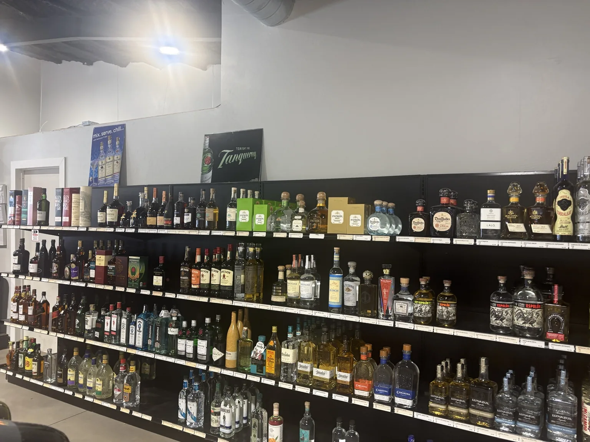
The next bottle
starts here.
Whether you have a favorite in mind or want to browse, explore the bottles below and stop in to see the full selection.

For the table. For the toast.
Explore reds, whites and sparkling wines, from dinner companions to bottles for a celebration.
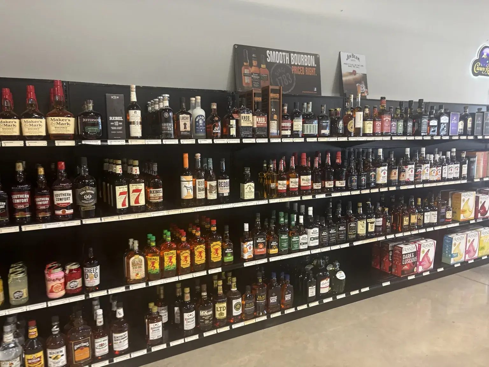
Find your next pour.
Browse bourbon, rye and other whiskey favorites, with a range of styles and bottle sizes.
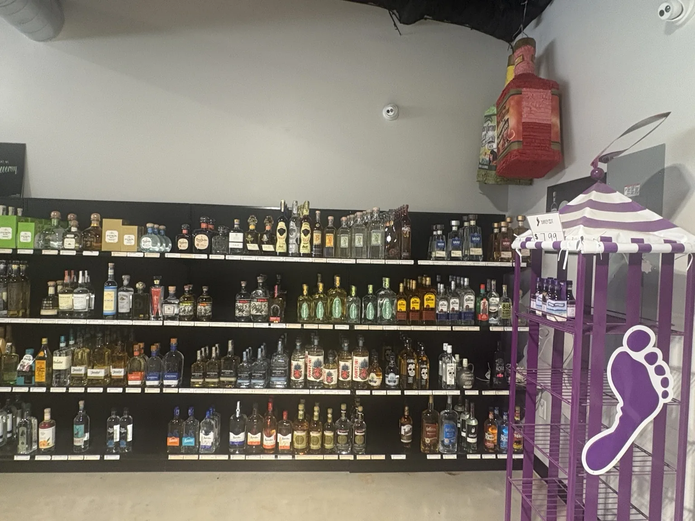
For sipping or mixing.
Take a look through blanco, reposado and añejo tequilas for your next margarita or sipping glass.
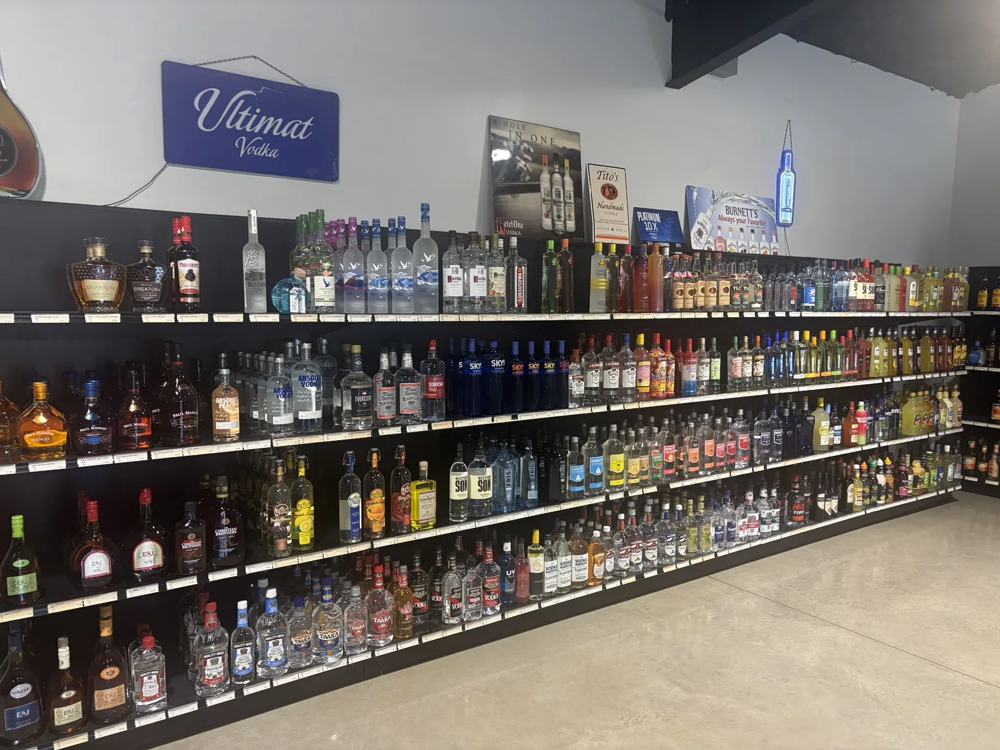
Your favorites, in view.
Explore classic and flavored vodkas alongside brandy, from familiar names to something different.
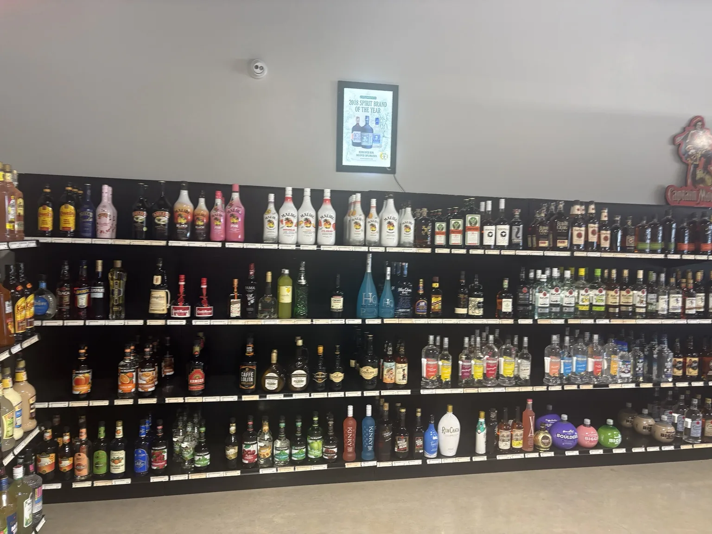
Build your cocktail shelf.
Browse coconut and flavored rums, cream liqueurs and ingredients for your favorite mixed drinks.
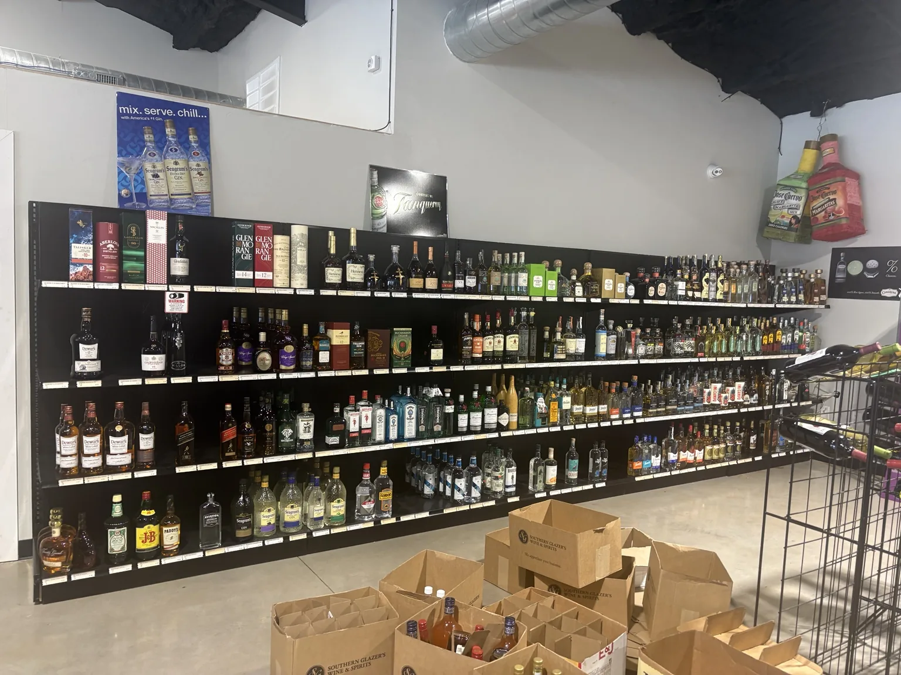
A little more to explore.
Look through single malts, blended Scotch, Irish whiskeys and gins along the spirits wall.

Find your usual.
Take a look through the beer packs and canned drinks when you stop by.

The finishing touches.
Browse mixers and the displays around the counter to round out your stop.
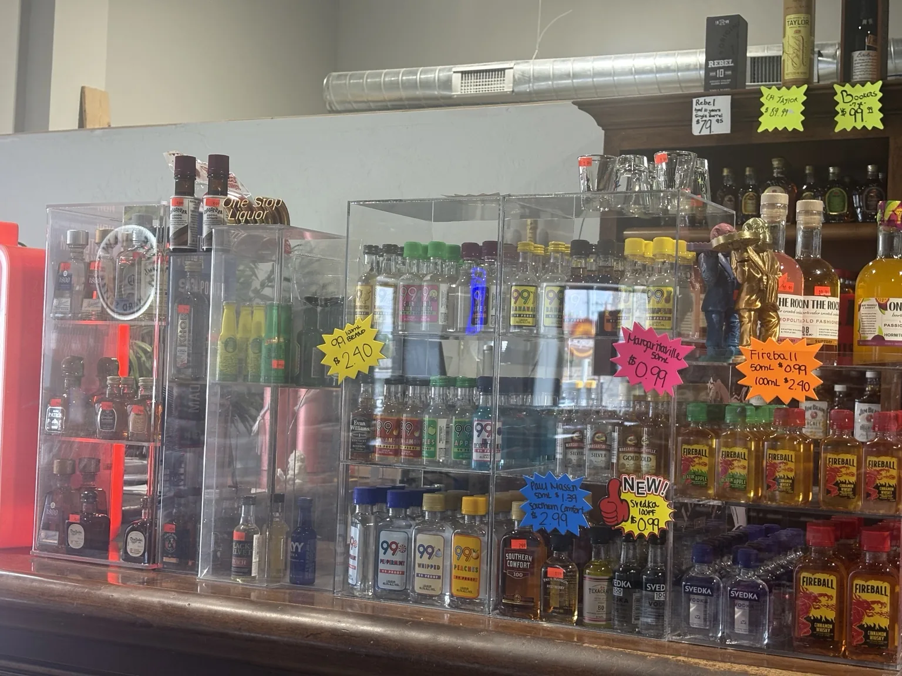
Small bottles. Plenty of choice.
Find miniature spirits, flavored shots and bottled cocktails around the checkout counter.
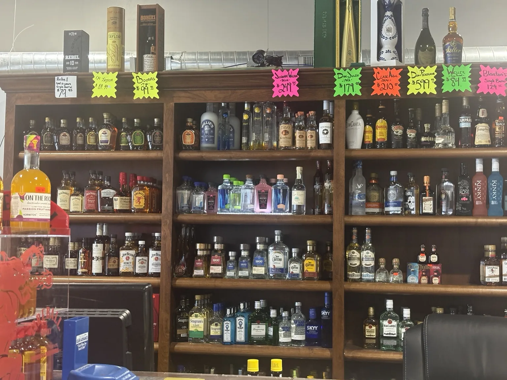
Take one more look.
Browse the bottles behind the counter and ask about anything that catches your eye.
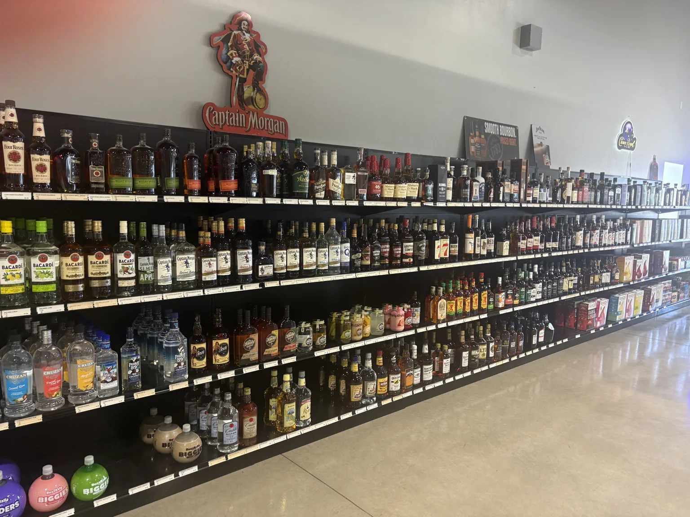
Room to browse.
Follow the shelves from rum and ready-to-drink cocktails through bourbon and whiskey.
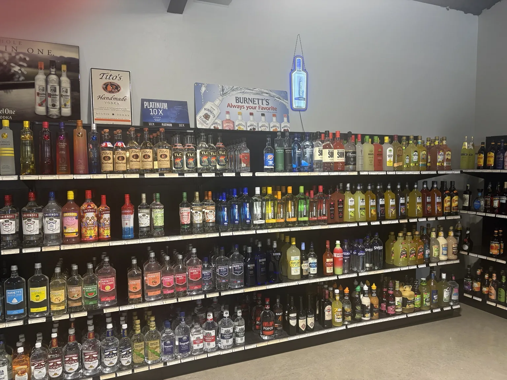
Mix up your usual.
Explore fruit-flavored vodkas and nearby mixers for your next cocktail.
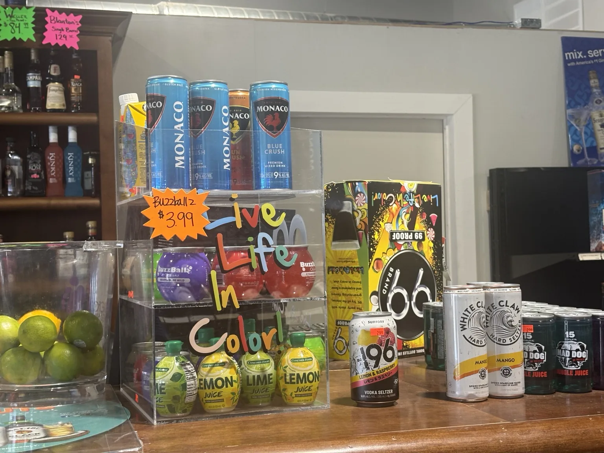
Ready to pour.
Browse canned cocktails, hard seltzers and citrus mixers at the counter.
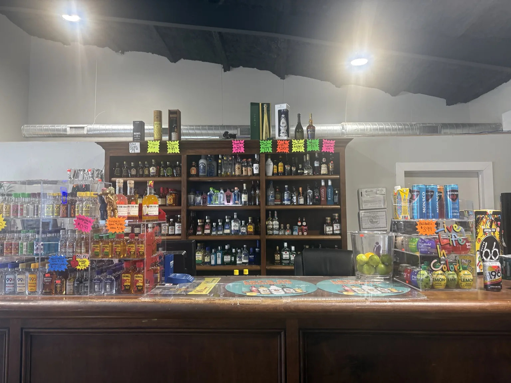
Before you head out.
Take a look through the mini bottles, spirits and drink displays around the checkout.
Photos show products and prices at the time they were taken. Selection, availability and pricing can change. Call (405) 470-8282 to ask about a specific bottle.